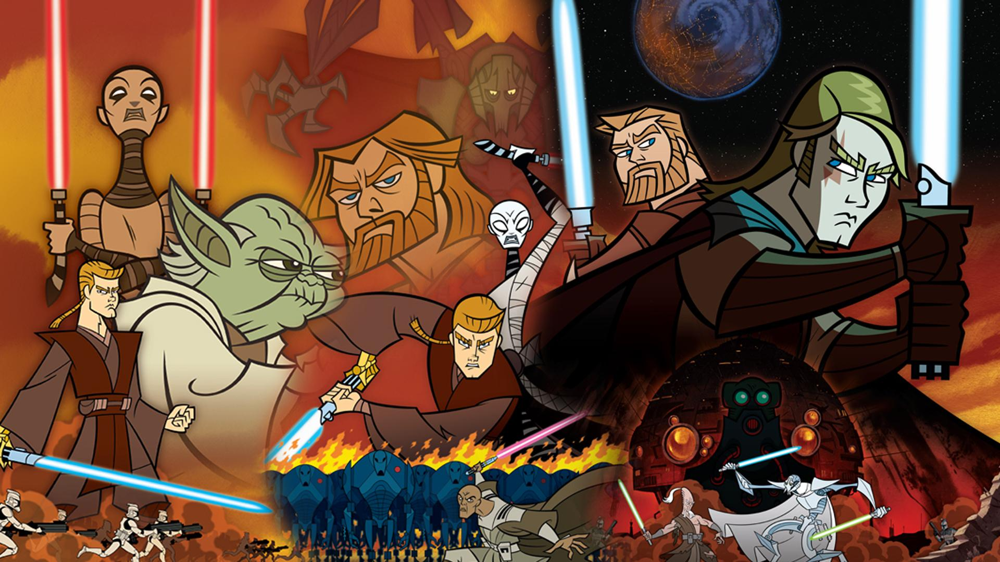
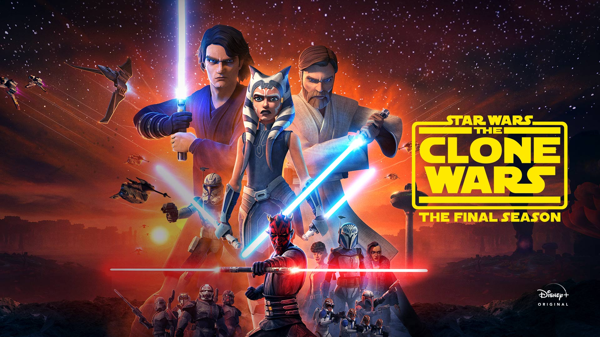
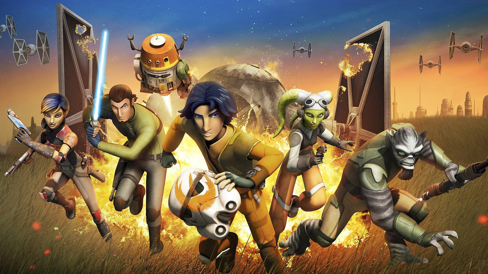
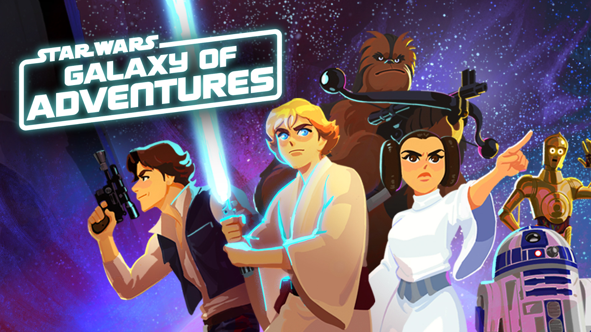

Es una serie de animación situada en el universo Star Wars, que relata algunos de los sucesos acontecidos durante las Guerras Clon entre la República Galáctica liderada por el Canciller Supremo Palpatine y la Confederación de Sistemas independientes (CSi) liderada por el Conde Dooku. Fue producida por los Cartoon Network Studios, siendo emitida entre 2003 y 2005. Se pensó en esta para que sirviera de puente entre los eventos de las las películas Star Wars: Episodio 2 El Ataque de los Clones y Star Wars: Episodio 3 La Venganza de los Sith que representan el inicio y final de la mencionada guerra, respectivamente. Cronológicamente, tendría lugar en los años que transcurren durante las dos películas, entre 22 ABY y 19 ABY, siendo éste el período de tiempo de los tres años que duraron las Guerras Clon.

Star Wars: The Clone Wars
Es una serie de televisión con animación 3D CGi, creada por Lucasfilm y con animación de Lucasfilm Singapur y CGCG inc. En marzo del 2013, Lucasfilm canceló la continuación de Star Wars: The Clone Wars, con lo que no habría más temporadas. Posteriormente, los derechos de emisión fueron adquiridos por Netflix, que pondría a disposición de sus usuarios las cinco primeras temporadas, además de un conjunto de nuevos episodios bajo el nombre de Las misiones perdidas. La serie habría terminado con un total de 121 episodios. El 16 de enero del 2014, la cadena de televisión alemana Super RTL anunció sus planes para estrenar la sexta temporada, que consta de 13 episodios. El 7 de marzo del 2014 se estrenaron en Netflix los episodios de la sexta temporada. En la supuesta temporada final, titulada Las misiones perdidas, la fuerza combatirá desavenencias en su interior y se enfrentará a la amenaza creciente de los Sith y sus aprendices en la Galaxia, y la creación de la orden 66. El 19 de julio del 2018, durante la San Diego Comic Con 2018, se anunció el estreno de la séptima temporada, esta contó con 12 episodios y servio para poner un verdadero final a la serie. La serie en su totalidad está disponible en la plataforma de streaming Disney Plus.

Star Wars: Rebels
Es una serie de televisión de animación 3D CGi parte de la franquicia Star Wars, creada por Lucasfilm, y que es emitida desde otoño de 2014 por el canal de televisión Disney XD. Dave Filoni y Simon Kinberg son los productores ejecutivos. El estilo visual de Star Wars Rebels está inspirado en los trabajos de arte conceptual de la trilogía original, realizados por Ralph McQuarrie. La serie está ambientada en el periodo de tiempo que discurre entre Han Solo: una historia de Star Wars y Rogue one y sigue los pasos de la tripulación de la nave espacial Ghost y sus aventuras mientras luchan contra el imperio Galáctico y sientan las bases de la Alianza Rebelde.

Star Wars: Galaxy of Adventures
Es una microserie que vuelve a contar los momentos clave de la franquicia de Star Wars de forma animada y corta. La serie orientada a niños debutó en StarWarsKids.com y YouTube el 30 de noviembre de 2018.

The Mandalorian
Es una serie de televisión de Star Wars acción en vivo desarrollada por Lucasfilm. La serie toma lugar alrededor de cinco años después de los eventos de Star Wars: Episodio 6 El Retorno del Jedi y se emite exclusivamente en el nuevo servicio de transmisión, Disney Plus, empezando el 12 de noviembre de 2019. Este cuenta la historia de un mandaloriano que toma cuidado de un niño que contiene la fuerza.
Star Wars: The Bad Batch
Es una próxima serie de animación que ejerce como secuela y spin-off de Star Wars: The Clone Wars. Fue anunciada el 13 de julio de 2020 y se estrenará en Disney Plus en 2021.